半券 使い方ガイド
テスターのみなさんへ。2026年11月28日版です。画面はテスト中のもので、変わることがあります。ガイドの画面は、見本のデータ（架空のライブと曲）で撮っています。
「半券」は、行くライブを登録して、出演するアーティストの予習プレイリストを作り、YouTube Music に保存できるアプリです。ライブのあとは、セトリのプレイリストや、会場・終電・感想・写真の記録も残せます。
もくじ
- はじめ方
- 画面の見方
- ライブを登録する
- ライブの記録（会場・終電・感想・写真）
- 予習プレイリストを作る
- プレイリストを直す
- セトリのプレイリストを作る
- YouTube Music に保存する
- 1日に使える回数
- プレイリストの一覧
- 設定
1はじめ方
アプリを開く
スマホのブラウザで https://manekineko1119.github.io/hanken/ を開きます。インストールは要りません。
ホーム画面に追加する（おすすめ）
- iPhone（Safari）：画面下の 共有（四角から上向きの矢印）→ ホーム画面に追加 → 追加
- Android（Chrome）：右上の ︙ → ホーム画面に追加（または アプリをインストール）。項目が出ないときは、Chrome を閉じて開き直してください
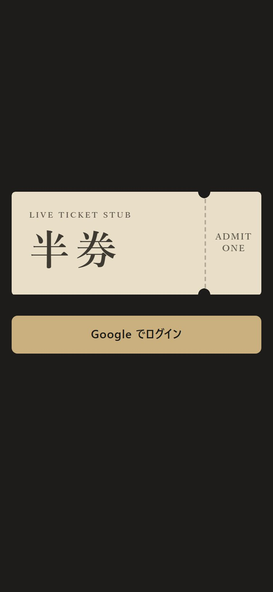
ログインする
招待した人だけが使えます。Google でログイン を押し、管理者に伝えた Google アカウントを選びます。
ふだんのログインで使うのは、名前とメールアドレスだけです。YouTube の権限は、プレイリストを保存するときに別に聞きます（8章）。
2画面の見方
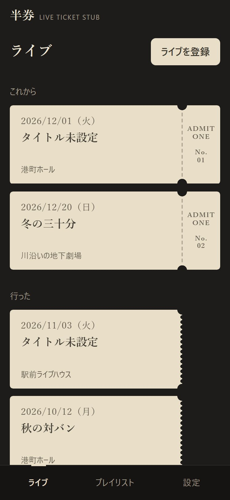
画面のいちばん下のメニューで、画面を切り替えます。
| ライブ | 登録したライブの一覧。予習・セトリ・記録は、ここからライブを開いて作ります |
|---|---|
| プレイリスト | 作ったプレイリストの一覧。ライブなしで、アーティスト名だけでも予習を作れます |
| 設定 | YouTube のつながり・自分の最寄り駅・ログアウト・このガイド |
3ライブを登録する
ライブの一覧
- これから：今日からあとのライブ。ミシン目の先に半券が付いた券で出ます
- 行った：終わったライブ。半券を切り取ったあとの短い券で出ます
券を押すと詳細が開きます。新しく登録するときは、右上の ライブを登録 を押します。
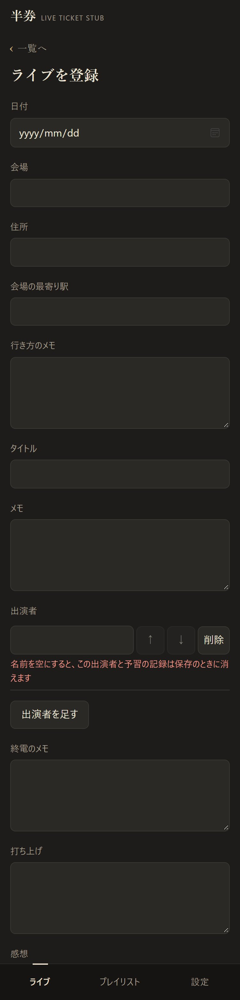
入れるもの
- 日付：ライブの日（必ず入れる）
- 会場・住所・会場の最寄り駅・行き方のメモ：会場のこと。住所か会場名があると、地図で行き方を開けます
- タイトル：ツアー名やイベント名。空でもかまいません（一覧では「タイトル未設定」）
- メモ：開場・開演の時刻、物販のことなど
- 出演者：1組以上必ず入れます。1組ずつ入れます。対バンなら 出演者を足す で増やし、↑ ↓ で順番を変えます
- 終電のメモ・打ち上げ・感想：ライブのあとで入れてもかまいません（4章）
入れ終わったら 保存 を押します。
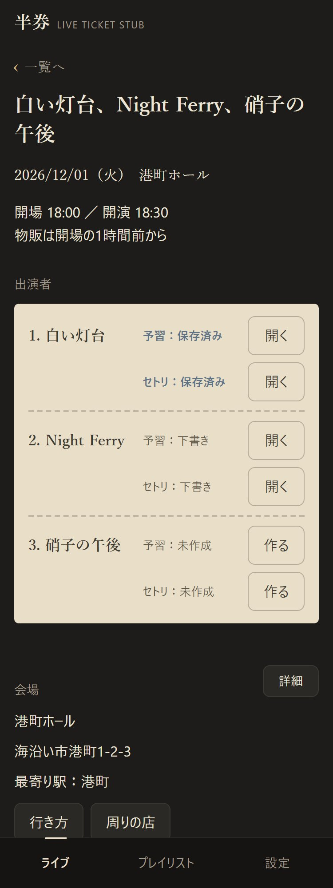
ライブの詳細
出演者ごとに、予習とセトリのプレイリストの状態が出ます。
- 未作成：作る で作ります（予習は5章、セトリは7章）
- 下書き：アプリの中にあり、YouTube Music にはまだ保存していません。開く で開きます
- 保存済み：YouTube Music に保存しました
いちばん下の 編集 でライブを直し、削除 で消します。
4ライブの記録（会場・終電・感想・写真）
ライブの詳細の出演者の下に、記録の欄が並びます。欄ごとの右のボタンで、その場で書き直せます。
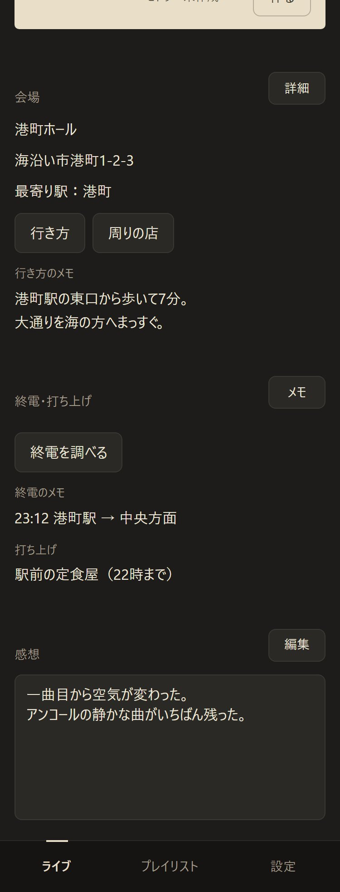
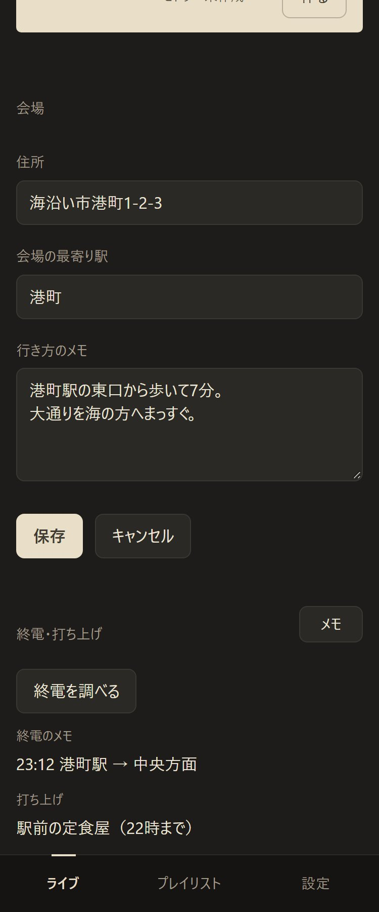
会場
会場名・住所・最寄り駅・行き方のメモが出ます。
- 行き方：Google マップで、今いる場所から会場までの電車の行き方を開きます
- 周りの店：会場の近くの飲食店を Google マップで開きます
- 詳細：住所・会場の最寄り駅・行き方のメモを書き直します（右の画面）。会場名は、いちばん下の 編集 で直します
終電・打ち上げ
- 終電を調べる：Yahoo!乗換案内で、会場の最寄り駅から自分の最寄り駅までの、その日の終電を開きます
- メモ：終電のメモと、打ち上げのお店などを書きます
感想
編集 で書きます。書いたら 保存、やめるときは キャンセル。
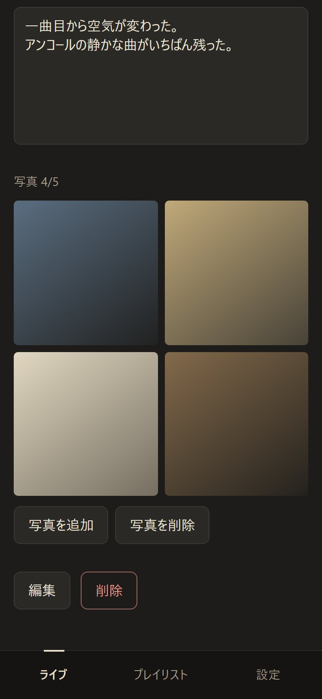
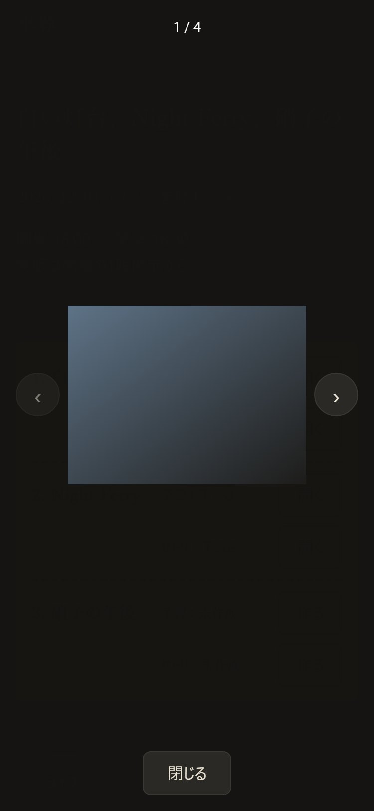
写真
- 1つのライブに 5枚まで 残せます。写真を追加 で選びます
- 写真は保存するときに小さく作り直すので、撮った場所などの情報は残りません
- 写真を押すと大きく出ます（右の画面）。左右にめくるか ‹ › で次の写真へ。閉じる で戻ります
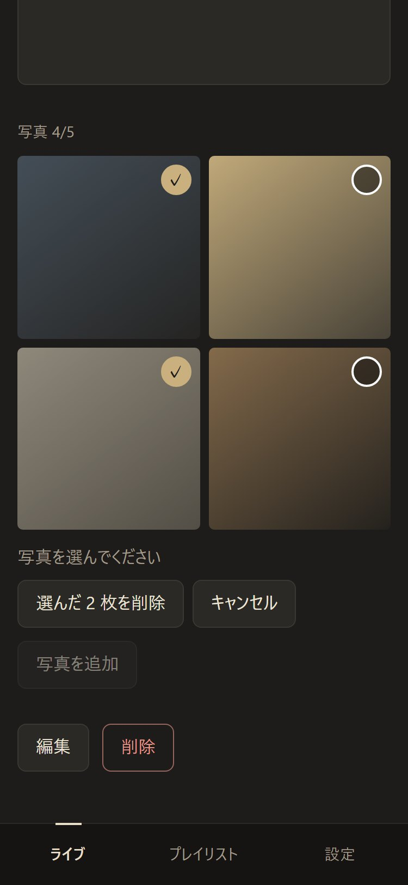
写真を消す
- 写真を削除 を押す
- 消したい写真を押して選ぶ（印が付きます。何枚でも）
- 選んだ 〇 枚を削除 を押し、確認で OK
やめるときは キャンセル です。
5予習プレイリストを作る
ライブの詳細で、出演者の予習の 作る を押すと、そのアーティストの曲を最大10曲選んだプレイリストが自動でできます。人気の高い曲を中心に、いちばん新しい曲も1曲入ります。曲の少ないアーティストは、10曲より少なくなります。
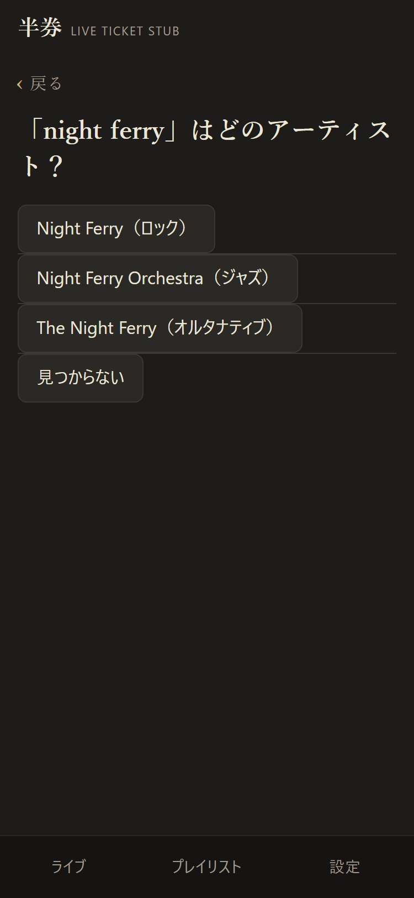
同じような名前のアーティストがいるとき
「〇〇はどのアーティスト？」と聞かれたら、候補（ジャンルつき）から出演するアーティストを押します。選んだアーティストの正式な名前で曲を探すので、ひらがなやカタカナで入れていても大丈夫です。
候補にいないときは 見つからない で戻り、名前を直してもう一度 作る を押します。
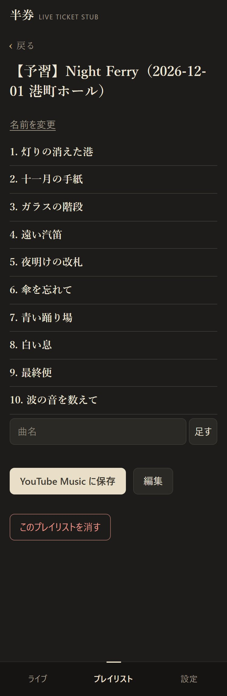
できたプレイリスト
名前は「【予習】アーティスト名（日付 会場）」です。この時点では、アプリの中だけにある「下書き」です。直すときは6章、YouTube Music に入れるときは8章へ。
6プレイリストを直す
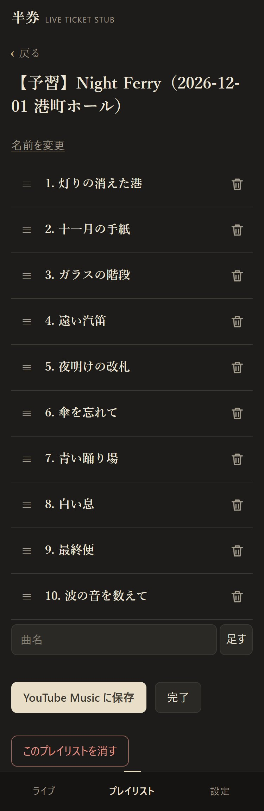
曲を消す・並べ替える
編集 を押すと、曲の行に印が出ます。終わったら 完了。
- ゴミ箱：その曲を消します。予習では、次の候補の曲があれば、空いたところに自動で入ります（候補がなければ曲が減ります）
- ≡：つかんで上下に動かすと、順番を変えられます。予習のいちばん新しい曲は動かせません
曲を足す
下の 曲名 の欄に入れて 足す。予習では、同じ曲は2回入れられません（セトリでは、同じ曲名も入れられます）。
直した内容は、その場で自動で保存されます。
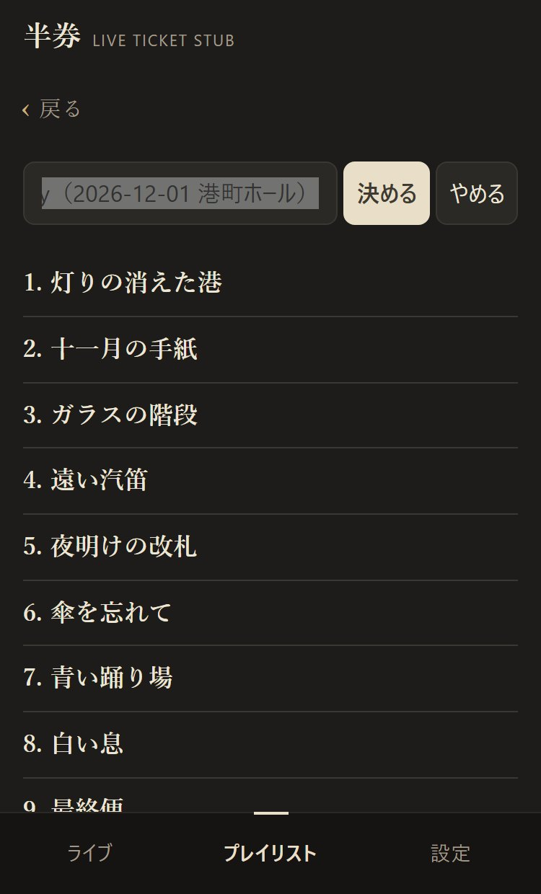
名前を変える
見出しの下の 名前を変更 → 入れ直して 決める（やめるときは やめる）。YouTube Music に保存したあとは、「保存の確認」の画面（8章）で名前を変えて反映します。
プレイリストを消す
いちばん下の このプレイリストを消す で消せます。消えるのはアプリの中の記録だけです。YouTube Music に保存したものは残るので、要らなければ YouTube Music の側で消してください。
7セトリのプレイリストを作る
ライブのあと、X やインスタに出たセトリのスクショや、会場に貼られたセトリの紙の写真から、そのライブで聴いた曲のプレイリストを作れます。ライブの詳細で、出演者のセトリの 作る を押します。
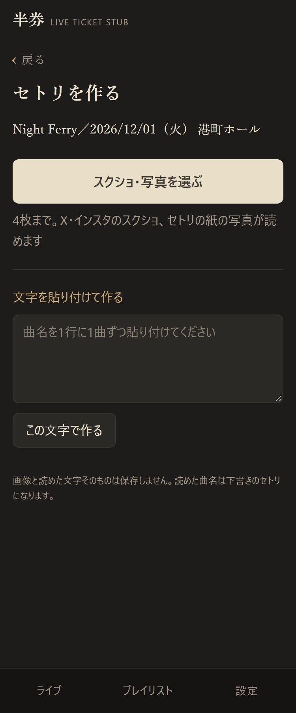
画像から読む
- スクショ・写真を選ぶ を押す
- セトリの画像を選ぶ（4枚まで。2枚に分かれたスクショもまとめて読めます）
- 読めた曲名で、下書きのセトリができます
文字を貼り付けて作る
セトリが文字で手元にあるときや、画像が読めなかったときは、文字を貼り付けて作る を開き、曲名を1行に1曲ずつ貼り付けて この文字で作る を押します。
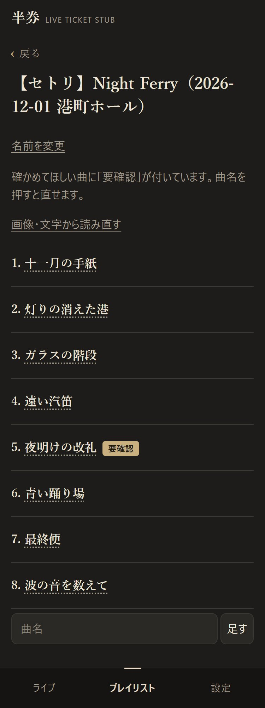
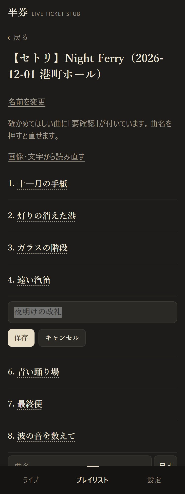
できたセトリを確かめる
- 読み取りに自信のない曲には 要確認 の印が付きます
- 曲名を押すと、その場で直せます（右の画面）。直したら 保存、やめるときは キャンセル
- MC やライブ名・日付などの行と、曲名の後ろの演奏メモ（Acoustic・ver. など）は、できるだけ外して読みます
- 画像・文字から読み直す：読み直して、今のセトリと置き換えます（確認が出ます）
曲の消す・並べ替え・足す・名前の変更は、予習と同じです（6章）。名前は「【セトリ】アーティスト名（日付 会場）」です。YouTube Music への保存も予習と同じです（8章）。
8YouTube Music に保存する
プレイリストの画面の YouTube Music に保存 を押すと、「保存の確認」の画面が開きます。保存したプレイリストは、あなたの YouTube Music のライブラリに非公開で入ります。
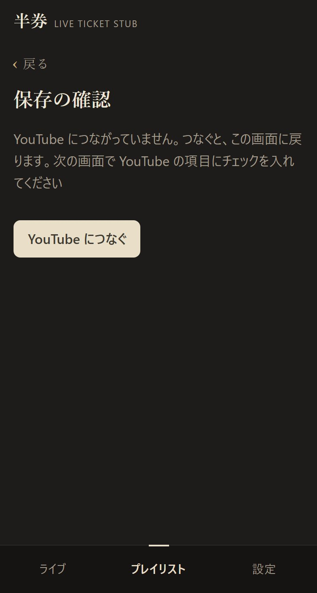
はじめて保存するとき：YouTube につなぐ
- プレイリストの画面で YouTube Music に保存 を押す（まだつないでいないときは、そのまま Google の画面に進みます）
- Google の画面でアカウントを選ぶ（「確認していません」と出たら 詳細 から先へ）
- 権限の画面で、YouTube の項目にチェックを入れて 進む
- 自動で半券の「保存の確認」の画面に戻ります
つながりが切れているときは、この章のはじめの画面のように「保存の確認」で YouTube につなぐ が出ます。押すと、同じ手順でつなぎ直せます。
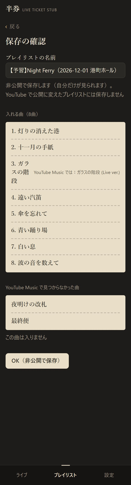
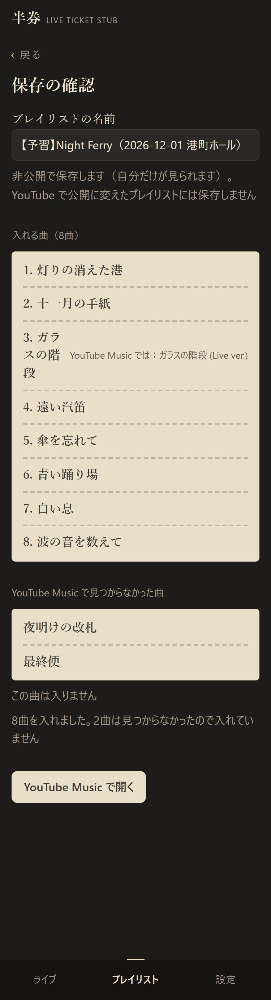
保存の確認
アプリが YouTube Music で曲を探し、結果を見せます。
- プレイリストの名前：ここでも変えられます
- 入れる曲：見つかった曲。少し違う版（ライブ版など）のときは「YouTube Music では：〜」と出ます
- YouTube Music で見つからなかった曲：この曲は入りません
よければ OK（非公開で保存）。保存できると「〇曲を入れました」と出て、YouTube Music で開く で聴けます。
91日に使える回数
YouTube と Google の無料の枠の中で動かしているため、使える回数を決めています。
| 曲を探す（保存の確認） | 1人 1日30回。1曲につき1回なので、新しい10曲なら10回です。30日以内に誰かが探した曲は、その記録を使うので数えません |
|---|---|
| YouTube Music に保存・反映 | 1人 1日5回。押すたびに1回です。失敗したときは数えません（ただし、YouTube の側で公開・限定公開に変えたプレイリストへの反映は、断られても1回と数えます） |
| セトリの画像の読み取り | 1人 1日10回（1回で4枚まで）。テスター全員で月800枚まで。読み取りを始めたあとは、読めなくても1回（と送った枚数）を数えます。画像を開けない・大きすぎるときは、読み取りを始めないので数えません |
| テスター全員の合計 | 曲を探すのは、全員で1日90回まで。ほかの人がたくさん探した日は、30回より前に止まることがあります |
| 上限のないもの | ライブの登録・記録・写真（1つのライブに5枚まで）、予習を作る、文字の貼り付けでセトリを作る、曲を直す、名前を変える、消す |
- 1人の回数は、日本時間の0時に戻ります
- 全員の合計と YouTube 全体の枠は、日本時間の17時ごろ（夏は16時ごろ）に戻ります。「今日の YouTube の枠がいっぱいです」と出たときも、この時刻のあとに試してください
- 月の読み取りの枚数は、毎月1日の17時ごろ（夏は16時ごろ）に戻ります
- 上限を超えても、それまでに見つかった曲はそのまま残ります
10プレイリストの一覧
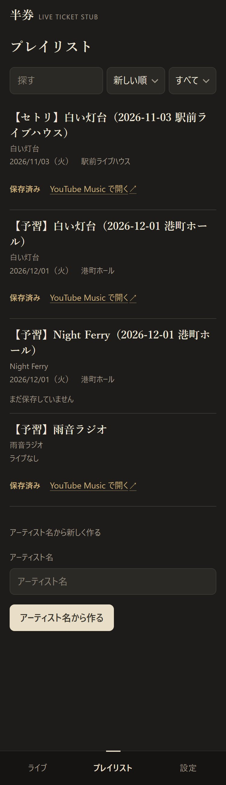
メニューの プレイリスト で開きます。予習とセトリのプレイリストが並び、押すとプレイリストの画面が開きます。
- 探す：アーティスト名・タイトルで絞ります
- 並び順：新しい順・古い順・ライブ順
- 種類：すべて・予習・セトリ
- 保存済み のものは YouTube Music で開く から、すぐ聴けます
アーティスト名だけで予習を作る
ライブの予定がなくても、いちばん下にアーティスト名を入れて アーティスト名から作る を押すと作れます。名前は「【予習】アーティスト名」で、一覧には「ライブなし」と出ます。
11設定
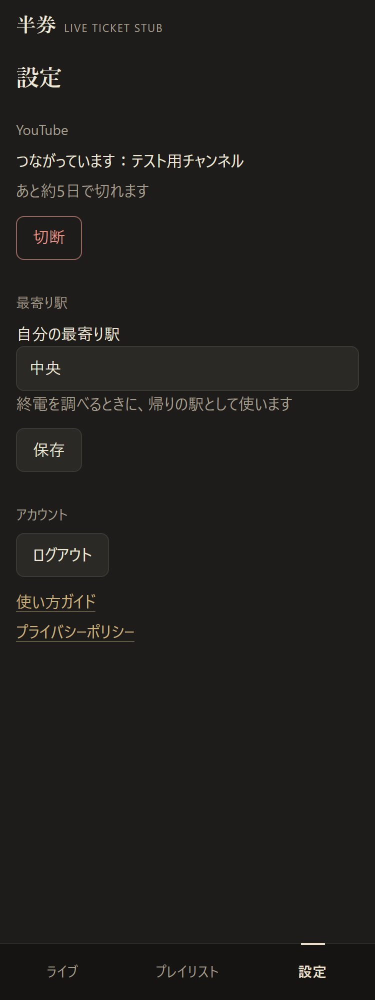
YouTube
- つながっているチャンネルの名前と、切れるまでのおよその日数が出ます
- 切断：YouTube とのつながりを切ります。保存したプレイリストは YouTube Music に残ります
- つながっていないときは YouTube につなぐ が出ます（8章）
最寄り駅
自分の最寄り駅を入れて 保存。「終電を調べる」で、帰りの駅として使います（4章）。
アカウント
- ログアウト：ログインをやめます。記録はアカウントに残り、もう一度ログインすれば元どおり見られます
- 使い方ガイド：このページです
- プライバシーポリシー：アプリが使うデータ・送り先・消し方を書いています
困ったときは
動きがおかしいとき、分からないときは、このアプリを紹介した人（あなたを招待した人）に、画面の様子と一緒に伝えてください。
戻る